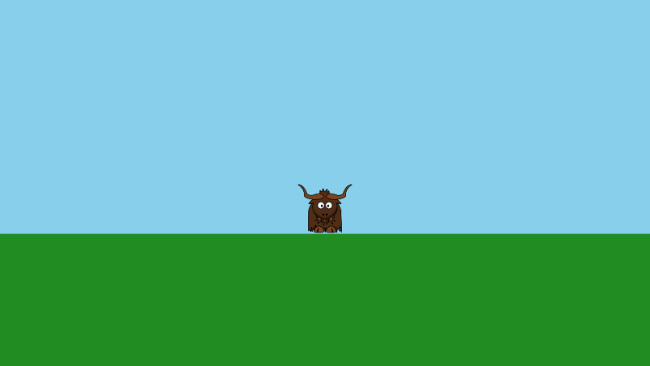

Yak Run, part 1: a yak on screen
In this four part tutorial you will build Yak Run, a small platform game. By the end, a yak runs and jumps across floating platforms, collecting glowing stars on the way to a finishing flag, with scrolling scenery, a HUD and some special effects.

In this first part you will set up the project and draw the yak standing on the ground.

You will learn: how to embed textures in a project, and how draw stages, cameras, textured and coloured quads, and depth work.
Before you start: complete Getting Started, so that you have the .NET SDK installed and know how to create and run a yak2D project.
The finished code for each part is in the documentation repository: Part 1, Part 2, Part 3, Part 4.
Create the project
dotnet new console -n YakRun
cd YakRun
dotnet add package Yak2D
Add the yak
Create a folder called Textures in the project folder, and save this image into it as yak.png:

Now tell .NET to embed everything in the Textures folder inside the compiled program, so the game is a single, self-contained program that cannot lose its images. Open YakRun.csproj and make it look like this:
<Project Sdk="Microsoft.NET.Sdk">
<PropertyGroup>
<OutputType>Exe</OutputType>
<TargetFramework>net10.0</TargetFramework>
<ImplicitUsings>enable</ImplicitUsings>
<!-- yak2D resources are created in CreateResources() rather than constructors,
so nullable reference warnings on those fields would just be noise here -->
<Nullable>disable</Nullable>
</PropertyGroup>
<ItemGroup>
<PackageReference Include="Yak2D" Version="1.*" />
</ItemGroup>
<!-- Embed every file in the Textures folder into the application assembly -->
<ItemGroup>
<EmbeddedResource Include="Textures\**" />
</ItemGroup>
</Project>
Two changes from the template:
- the
EmbeddedResourceitem embeds the textures; Nullableisdisable. yak2D resources are created in a method calledCreateResources()rather than in constructors, so C#'s nullable warnings about uninitialised fields would just be noise.
Note
yak2D finds embedded files by your program's assembly name, which is normally the project name. If you give your project a name containing a hyphen (like yak-run), also add <RootNamespace>$(AssemblyName)</RootNamespace> to the PropertyGroup. See Assets for why.
The Game class
Replace Program.cs with:
using Yak2D;
using YakRun;
Launcher.Run(new Game());
and create Game.cs. We will go through it a piece at a time; the whole file is at the end of this page.
Fields
private ITexture _yakTexture;
private IDrawStage _drawStage;
private ICamera2D _camera;
These hold references to things yak2D creates for us: a texture, a draw stage and a camera. yak2D owns the real objects (mostly on the GPU); we keep small reference objects to tell it which ones we mean. See Resources and references.
Start up
public StartupConfig Configure()
{
return StartupConfig.Default(960, 540, "Yak Run", false);
}
public void OnStartup() { }
Configure() is the first method yak2D calls. StartupConfig.Default() gives a 960 x 540 window with sensible settings. OnStartup() is for setting up our own objects; there are none yet.
Creating resources
public bool CreateResources(IServices yak)
{
// "yak" means Textures/yak.png, embedded in this assembly (see YakRun.csproj)
_yakTexture = yak.Surfaces.LoadTexture("yak", AssetSourceEnum.Embedded);
// A draw stage collects and sorts everything we draw each frame
_drawStage = yak.Stages.CreateDrawStage();
// A camera with a 960 x 540 "virtual resolution": whatever the window size,
// it always shows 960 x 540 world units
_camera = yak.Cameras.CreateCamera2D(960, 540);
return true;
}
public void ProcessMessage(FrameworkMessage msg, IServices yak)
{
// All yak2D resources are lost if the graphics device is recreated (e.g. switching graphics API)
if (msg == FrameworkMessage.GraphicsDeviceRecreated)
{
CreateResources(yak);
}
}
Everything yak2D creates is made in CreateResources():
LoadTexture("yak", AssetSourceEnum.Embedded)loadsTextures/yak.pngfrom the embedded files. The name has no folder and no extension.CreateDrawStage()makes a draw stage: a collector for everything we want to draw. Each frame we submit shapes and sprites to it; it sorts them and draws them efficiently.CreateCamera2D(960, 540)makes a camera that shows 960 by 540 units. This is its virtual resolution: however big the window is, the camera shows the same 960 x 540 area, scaled to fit. Position (0,0) is in the middle, and +Y is up.
If the graphics device is ever recreated (for example, if the graphics API is switched), every yak2D resource is lost and yak2D sends a GraphicsDeviceRecreated message. Handling it takes one line: call CreateResources() again. It is a good habit to start with.
Update
public bool Update(IServices yak, float secondsSinceLastUpdate)
{
return !yak.Input.WasKeyPressedThisFrame(KeyCode.Escape);
}
public void PreDrawing(IServices yak, float secondsSinceLastDraw, float secondsSinceLastUpdate) { }
Update() is called 120 times a second by default. Returning false closes the game, so Escape quits. PreDrawing() runs just before each frame is drawn; we will use it later.
Drawing
public void Drawing(IDrawing draw, IFps fps, IInput input, ICoordinateTransforms transforms, float secondsSinceLastDraw, float secondsSinceLastUpdate)
{
// The yak: a textured rectangle ("quad"), centred on the world origin
draw.Helpers.DrawTexturedQuad(_drawStage,
CoordinateSpace.World,
_yakTexture,
Colour.White, // White leaves the texture's colours unchanged
new Vector2(0.0f, -38.0f),
84.0f, // width
75.0f, // height
0.5f); // depth: 0 is at the front, 1 at the back
// The ground: a plain coloured rectangle, further back (depth 0.9) than the yak
draw.Helpers.DrawColouredQuad(_drawStage,
CoordinateSpace.World,
Colour.ForestGreen,
new Vector2(0.0f, -175.0f),
960.0f,
200.0f,
0.9f);
}
Drawing() runs once per frame. We submit two things to the draw stage:
- The yak, with
DrawTexturedQuad: a rectangle showing a texture. The position is its centre.Colour.Whiteleaves the texture's own colours unchanged (any other colour would tint it). The size keeps the image's proportions (the texture is 256 x 228 pixels). - The ground, with
DrawColouredQuad: a rectangle filled with one colour.
The last number is the depth, from 0 (front) to 1 (back). The yak is at 0.5 and the ground at 0.9, so the yak is always drawn in front of the ground, whichever order we submit them in. See Layers and depth.
CoordinateSpace.World means the positions are in the game world, viewed through the camera. When the camera moves (in part 3), these will move on screen.
Rendering
public void Rendering(IRenderQueue q, IRenderTarget windowRenderTarget)
{
q.ClearColour(windowRenderTarget, Colour.SkyBlue);
q.ClearDepth(windowRenderTarget);
q.Draw(_drawStage, _camera, windowRenderTarget);
}
Nothing we submitted in Drawing() has appeared yet. Rendering() builds the list of GPU work for the frame:
- clear the window to sky blue,
- clear the window's depth buffer, so last frame's depths don't hide this frame's drawing,
- render our draw stage, through our camera, onto the window.
This split between drawing (describing what to draw) and rendering (deciding how and where it is rendered) is at the heart of yak2D. In part 4 it lets us send the whole scene through a chain of effects before it reaches the window. See How yak2D works.
Run it
dotnet run
A yak stands on green ground under a blue sky. Press Escape to quit.
Tip
Try making the window resizable (config.WindowIsResizable = true; in Configure()), then resize it. The camera's virtual resolution keeps the picture the same, just scaled.
The finished code
The complete files for this part are on GitHub: Game.cs, Program.cs, YakRun.csproj. (The #region lines in the code only mark the pieces shown on this page.)
Next
In part 2 the yak learns to run and jump.